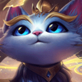
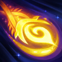
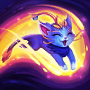

核心裝備
 熾灼魔器
熾灼魔器 和諧回音
和諧回音 贖罪神石
贖罪神石 流水之杖
流水之杖 米凱的祝福
米凱的祝福

以下為本站 7.2d 校正後的標準配置；實戰仍需依敵方陣容調整。


技能優先：Q > E > W
普攻與技能命中敵方英雄時會治療悠咪，若在數秒內附著至友軍也會分享治療。附著期間共同擊殺會累積親密度，最高者成為摯友並強化技能。

發射飛彈傷害第一個命中的敵人；飛行一段時間後造成更高傷害與緩速。附著時可控制飛行方向，對摯友還能提供額外增益。

飛向友方英雄並附著，期間跟隨其移動且通常無法被指定。附著在摯友身上時，悠咪的治療、護盾及摯友獲得的回復效果會提高。｜7.2d：飛撲抱抱冷卻調整為 8/4/0 秒，摯友提供的治療與護盾強度提高至 8/9/10/11%。
賦予自身或附著友軍護盾與攻速，護盾存在期間也提高跑速。｜7.2d：蹦蹦衝刺冷卻調整為 9 秒；護盾為 80/110/140/170＋40% 魔攻。
向前發出多道能量波，對敵人造成傷害並逐波提高緩速；每道波浪也會治療友軍，過量治療轉成護盾，摯友獲得更高治療。
2技離開附著 → 安全普攻命中英雄 → 再次2技附著射手 → 3技提供護盾攻速
只在敵方關鍵控制已交或距離安全時下車。命中後盡快重新附著，把被動治療分享給隊友。
附著狀態操控1技 → 3技護盾攻速加速宿主 → 虛弱敵方反打主力 → 下一輪1技持續緩速
讓一技飛行足夠時間再命中，取得強化傷害與緩速；三技配合宿主開始連續輸出時使用。
4技沿戰線施放 → 3技護盾宿主 → 治療補全隊血量 → 虛弱突進者 → 宿主危險時跳向安全隊友
大絕同時命中敵人與多名友軍收益最高。新版大絕不再定身，應配合逐波緩速、護盾與虛弱拖過爆發。
悠咪附著後很安全，但完全不下車會失去普攻與技能觸發被動治療、幫忙擋技能及佈置視野的機會。敵方關鍵控制進入冷卻時可短暫離開隊友，普攻或技能命中英雄後再於數秒內附著，把治療分享給友軍。奇幻圖騰附著時可操控飛行方向，飛行超過一段時間後會造成更高傷害與緩速。
親密度最高的友軍會成為摯友，附著在摯友身上時各技能獲得額外效果。通常跟著目前最能持續輸出的隊友，但物件前仍要在安全時機離開附著放置視野。蹦蹦衝刺提供護盾、攻速與護盾存在期間的跑速，應在宿主準備輸出或遭到集火時使用，而不是滿血走路時隨意消耗。
最終篇章會向前發出多道能量波，傷害並逐步緩速敵人，同時治療命中的友軍，過量治療會轉成護盾。調整宿主位置讓波浪同時覆蓋前排與後排；敵方刺客進場時先虛弱，再用三技護盾與大絕波浪穩住主力。宿主即將死亡時提前跳向另一名安全隊友，避免一起被擊殺。
對局名單是本站依英雄機制與目前配置整理的參考，不等同固定勝率。
輔助調整以團隊承傷、解控與保護主力為優先，不為了單一敵人破壞整套功能裝。
觸發：敵方主要輸出集中在射手、物理刺客或普攻型英雄。
日輪的加冕提供團隊護盾與雙防，讓軟輔先保住主力再繼續施放治療／護盾。
觸發：敵方主要威脅來自法師、AP刺客或大量範圍魔法傷害。
日輪的加冕提供團隊護盾與雙防，能先撐過第一輪範圍爆發。
觸發：敵方硬控能直接抓死己方主力，或你進場後會被連續控制。
標準配置已有米凱、韌性鞋線或其他解控／防先手工具。
提醒：米凱主要替隊友解控；水星彎刀則是物理英雄自我解控，兩者角色不同。
觸發：敵方有大量治療、吸血或回復，讓己方集火很難完成擊殺。
黑魔禁書能由魔法傷害穩定施加重創，適合法師與軟輔處理大量治療。
觸發：己方只有一個主要輸出點，且敵方每波團戰都會集中切入他。
日輪的加冕提供額外即時護盾，讓你有時間接後續治療與保排技能。
提醒：保排調整看己方陣容，不是看到敵方刺客就把所有功能裝都換成防裝。
7.2a 輔助路第三批正式攻略：技能名稱與摯友重製機制依 Riot Games 台灣《激鬥峽谷》悠咪英雄頁、6.3d 官方重製公告及 7.2a 悠咪治療調整校正；出裝、符文、召喚師技能、技能順序與對局方向依本站輔助資料整合。Tier 維持本站既有輔助路評級。｜v72：套用瑟雷西 v69 輔助固定母版。｜v90：7.2d：飛撲抱抱冷卻縮短並提高摯友治療／護盾強度；蹦蹦衝刺冷卻縮短、護盾後期與魔攻係數提高。
本站於 2026-08-27 依 Patch 7.2d 重新檢查此配置。 Tier、出裝、符文與對局屬於 Wild Rift Guide 的整理與分析，不是 Riot Games 官方推薦；版本改動後會再依官方公告與實戰資料校正。